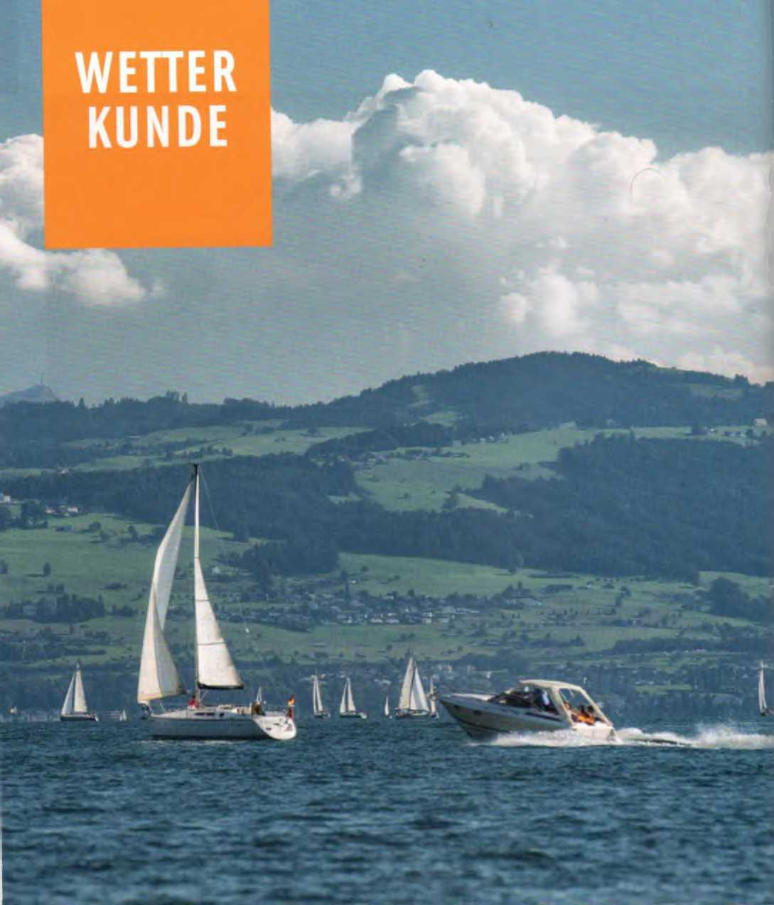

Die Erdkugel ist von einer Lufthülle umge Sen. Sie wurde gleichmäßig .erteilt au‘ der Erdoberfläche lagern und ungest C-t die Erddrehung nvtmachen, wenn ihr Gewicht - die luftdichte - sich nicht durch Erwarmung und Abkühlung andern wurde. Erwärmte Luft dehnt sich aus. Sie Ste g: auf und wird leichte'. der Luftdruck cementsp-echend med nger. So entsteht ein Tiefdruckgebiet, kur: Tief (T) genannt.
Kalte lu*t dagegen zieht sich zusammen, wird schwerer und erzeugt einen hohen Druck auf die Erdoberfläche. Es entsteht ein Hochdruckgebiet, kurz Hoch (H) genannt.
► Etn Tief bildet sich über Raumen, die starke- erwärmt sind als die umliegenden Gebiete.
► Em Hoch bildet sich über Raumen, die starker abgekuhlt sind als die umliegenden Gebiete.
Die Hochs und Tiefs liegen, allerdings nicht lest. Sie verlagern sich mehr oder weniger schnell und folgen gewissen charakteristischen Zugbahnen.
Die landläufige Meinung, ein Hoch bedeute stets schönes Wetter, ist nur teilweise richtig Sur m Kern und auf der Rückseite ist gutes Weiter zu erwarten. An seiner Front bleibt es meistens schlecht.
Der zwischen Hocn und Tief bestehende luft-druckunterschied gleicht sich aus, indem schwere Luft m das Gebiet mit leichterer Luft strömt. Diese luftbewegung ist der Wind Je dientet Hoch und Tief Zusammenlegen und >e großer das luftdruckgefaile zwischen ihnen Ist, umso Starter weht der Wind. Auf der wohl ,edem geläufigen Wetterkarte verbinden sogenannte Isobaren alle Orte gleichen Luftdrucks
► liegen die Isobaren eng beieirund«, ist das Druckgefälle groß, und es wird start wehen.
► liegen die Isobaren weit auseinander, ist das Druckgefälle gering, und es ist allenfalls mit leichten winden zu rechnen.
Die E'dd-ehung bewirtt, dass auf der nördlichen Halbkugel die .uft gegen den Uhrzeigersinn spiralförmig ins Tief einstromt, aus dem Hoch aber im Uhrzeigersinn spiralförmig ausstromt Auf der südlichen Halbkugel geschieht es entgegengesetzt
Die Hohe des lufld'ucks, gemessen in Hektopascal (h Pa), zeigt das Trometer an Allerdings sagt der augenblickliche Barometerstand über die Weiterentwicklung kaum etwas aus. Erst aus den Luftdruckschwankungen lassen sich gewisse Schlüsse ziehen. Im Allgemeinen gilt
» Gleich bleibender oder langsam ansteigender Luftdruck verspricht eine Schönwetterperiode.
► Stetig fallender Luftdruck kündigt schlechtes Wetter an, schnell fallender meist Sturm.
Die Windgeschwindigkeit wird in Meter pro Sekunde (m/s), Kilometer pro Stunde (km/h). Kneten (kn - Seemeilen pro Stunde) oder >n Beaufort (Bft) gemessen. Die Beaufort-Skala teilt die Wmdgeschn ndigkeit nach der Auswirkung au'See und land in I? geschätzte Startegrade ein.
Die tägliche Sonneneinstrahlung au* land und Wasser verursacht ein rein lokales Windsystem: die thermischen Winde. Sie berunen darauf, dass sich land viel schneller erwärmt als Wasser, aller auch schneller wieder auskuhlt So Bildet sich unter der Sonneneinstrahlung über land em kleines Tie», das durch einstromende kühlere Meeresluft aufgefullt wird. Es ent steht Seewind. Er weht von See aufs land (auflandig) und erreicht am frühen Nachmittag seine grofite Starke. Mit Sonnenuntergang schlaft er ein.
Am späten Abend, beziehungsweise nachts beginnt das umgekehrte Spiel. Uber dem Wasser, das die Wärme langer speichert, bildet sich em kleines Tief, das von kühlerer Landluft aufgelullt wird, derr Landwind. Er weht vom land aufs Wasser (ablandig). Diese thermischen Winde, die sich in einer flacheren Kustenregion ziemlich gleichmäßig ausbilden, können sich auf Berg-seen zu stoßartigen heftigen Fäl’büen entwickeln.
frontgewitter entstehen an einer Kaltfront innerhalb eines großräumigen 1 iefs. Sie wer den nicht durch Gebirge und Taler beeinflusst und erscheinen als eine Abfolge mehrerer über einen größeren Raum verteilten Gewitter, verbunden mit erheblicher Abkühlung. Warmegewitter sind Örtlich beschränkt, kennen ater stark böige Winde mit sich bringen. Durch große lokale Erwärmung entsteht eine
Gewitterwolke (Cumulonimbus) mit oben vereisten Türmen. In gebirgigem Gelände passt sie sich dem Zug der Berge und Täler an
In unseren Breiten bilden sich solche War-megen’tter meist im Westen oder Sudwesten und ziehen nach Ost bis Nordost. Sie beeinflussen die vorherrschende Wetterlage kaum Ge«’tter, die im Osten stehen, brauchen uns «um mehr zu bekümmern.
Unmittelbar vor einem Gewitter weht ihm der Wind meist entgegen, also aus östlichen Richtungen, dann Haut er häufig ab und springt dann jah in seiner Richtung um.
Viele Wassersportreviere haben ein Sturm-«arnsgstem mit optischen oder auch akustischen Signalen. Meist sind es Blinklichter Fs bedeutet:
► lange Blinkfolge: Vorwarnung.
» Kurze Blinkfolge: Sturmwarnung
Bei Sturmwarnung ist sofort oer nacnste Hafen oder em schützendes Ufer aufzusuchen. Auf den meisten Revieren besteht bei Sturmwarnung em generelles Auslaufverbot Selbstverständlich informiert sich jeder an einem ihm fremden Revier über das oortige Sturmwarnsystem.
